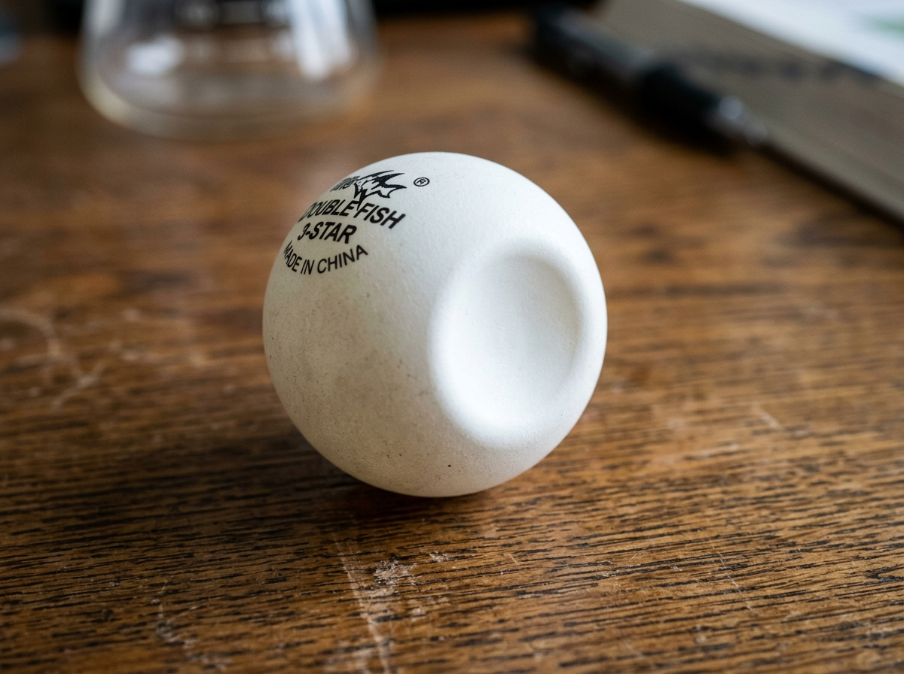
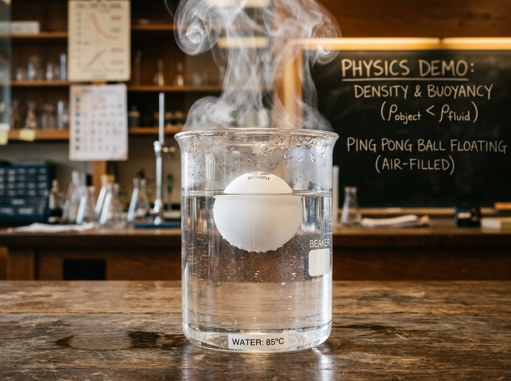
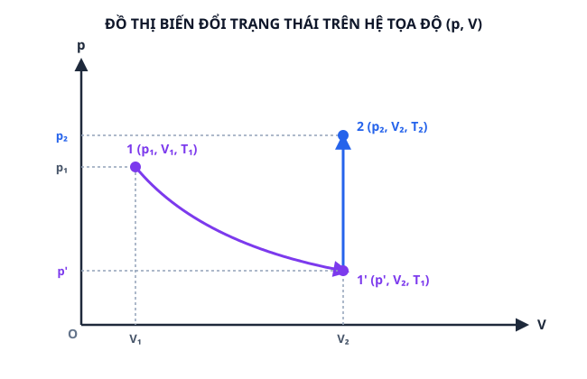
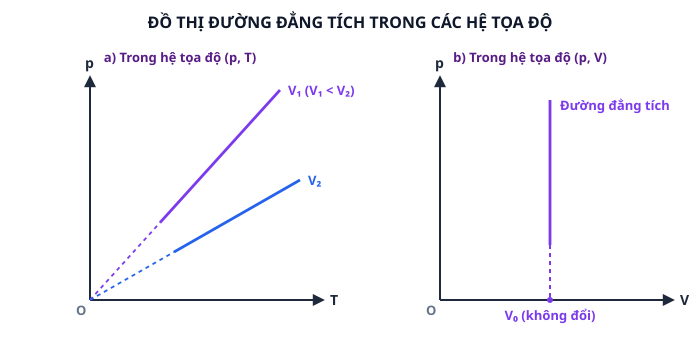

Bài 11: Phương Trình Trạng Thái Của Khí Lí Tưởng
NỘI DUNG BÀI HỌC
1. Thí Nghiệm Quả Bóng Bàn
Tiến hành thí nghiệm: Quan sát một quả bóng bàn bị bẹp khi thả vào một cốc nước nóng.

vatli102.comHình 11.1a: Trạng thái 1 – Quả bóng bàn bị bẹp ở nhiệt độ phòng $(p_1, V_1, T_1)$.

vatli102.comHình 11.1b: Trạng thái 2 – Quả bóng bàn trong cốc nước nóng phồng tròn lại $(p_2, V_2, T_2)$.
Giải thích hiện tượng:
Khi thả quả bóng bàn bị bẹp vào nước nóng, lượng khí giam trong quả bóng nhận nhiệt lượng làm nhiệt độ $T$ tăng từ $T_1$ lên $T_2$. Nhiệt độ tăng khiến vận tốc chuyển động nhiệt của các phân tử khí tăng, làm tăng lực va chạm lên vỏ quả bóng. Áp suất $p$ và thể tích $V$ của khối khí gia tăng, đẩy vỏ bóng phồng tròn trở lại hình dạng ban đầu.
2. Phương Trình Trạng Thái Của Một Lượng Khí Xác Định
Xét một lượng khí lí tưởng xác định có khối lượng $m$ không đổi chuyển từ Trạng thái 1 $(p_1, V_1, T_1)$ sang Trạng thái 2 $(p_2, V_2, T_2)$.
Để tìm mối liên hệ giữa các thông số trạng thái, ta thực hiện hai bước biến đổi thông qua một Trạng thái trung gian $1'$ $(p', V_2, T_1)$:
Biến đổi đẳng nhiệt từ Trạng thái 1 $(p_1, V_1, T_1)$ sang Trạng thái trung gian $1'$ $(p', V_2, T_1)$. Theo định luật Boyle:
Biến đổi đẳng tích từ Trạng thái trung gian $1'$ $(p', V_2, T_1)$ sang Trạng thái 2 $(p_2, V_2, T_2)$. Theo định luật về quá trình đẳng tích:

Hình 11.2: Đồ thị biểu diễn hai bước biến đổi từ Trạng thái 1 sang Trạng thái 2 trên hệ tọa độ $(p, V)$.
Từ hai biểu thức (11.1) và (11.2), ta có:
Phát biểu định luật: Đối với một lượng khí xác định, tích của áp suất $p$ và thể tích $V$ chia cho nhiệt độ tuyệt đối $T$ là một đại lượng không đổi.
3. Phương Trình Clapeyron
Đối với $n$ mol khí lí tưởng (khối lượng $m$, khối lượng mol $M$), mối liên hệ giữa ba thông số trạng thái tại một trạng thái xác định được biểu diễn qua phương trình Clapeyron:
Trong đó $R \approx 8,31\text{ J/(mol}\cdot\text{K)}$ là hằng số khí lí tưởng.
4. Liên Hệ Giữa Áp Suất Và Nhiệt Độ Tuyệt Đối Trong Quá Trình Đẳng Tích
Quá trình đẳng tích là quá trình biến đổi trạng thái của một lượng khí xác định khi thể tích được giữ không đổi ($V = \text{const}$).
Khi $V_1 = V_2$, từ phương trình trạng thái suy ra: $$\frac{p_1}{T_1} = \frac{p_2}{T_2} \quad \Rightarrow \quad \frac{p}{T} = \text{const}$$ Đối với một lượng khí xác định ở thể tích không đổi, áp suất tỉ lệ thuận với nhiệt độ tuyệt đối.
- Trong hệ tọa độ $(p, T)$: Đường đẳng tích kéo dài đi qua gốc tọa độ. - Trong hệ tọa độ $(p, V)$: Đường đẳng tích song song với trục áp suất $p$, gần trục hoành $V$ biểu diễn nét đứt.

Hình 11.3: Đồ thị biểu diễn đường đẳng tích trong hệ tọa độ $(p, T)$ và hệ tọa độ $(p, V)$.
5. Ứng Dụng Thực Tế
a) Khinh khí cầu
Khi đun nóng không khí bên trong khinh khí cầu, nhiệt độ $T$ tăng làm khối lượng riêng của khí nóng được tính bởi:
Do nhiệt độ $T$ tăng, khối lượng riêng $\rho_{\text{nóng}}$ giảm nhỏ hơn khối lượng riêng của không khí lạnh bên ngoài. Lực đẩy Archimedes $F_A = \rho_{\text{ngoài}} \cdot V \cdot g$ vượt quá tổng trọng lượng $P$, tạo ra lực nâng $F_{\text{nâng}} = F_A - P > 0$ đẩy khinh khí cầu cất cánh bay lên cao.
b) Bóng thám không
Bóng thám không được bơm một lượng khí xác định ở mặt đất $(p_1, V_1, T_1)$. Khi bay lên các tầng khí quyển cao, áp suất $p_2$ và nhiệt độ $T_2$ giảm mạnh. Theo phương trình trạng thái:
Do áp suất khí quyển $p_2$ ở trên cao giảm rất nhiều so với mặt đất, thể tích $V_2$ của quả bóng dãn nở gấp hàng chục lần đến khi đạt độ cao đo đạc khí tượng cần thiết.

c) Túi khí an toàn ô tô
Khi xảy ra va chạm mạnh, cảm biến kích hoạt phản ứng hóa học tạo ra lượng khí lớn trong thời gian cực ngắn. Lượng khí dãn nở nhanh làm thể tích $V$ và áp suất $p$ tăng vọt, bơm căng túi khí tạo thành đệm hơi giảm chấn thương nguy hiểm cho hành khách.
d) Cách sử dụng bình oxygen trong y tế
Khí oxygen y tế được nén dưới áp suất rất cao ($p_1 \approx 150 - 200\text{ bar}$) trong bình thép có thể tích $V_1$ cố định. Khi sử dụng, khí oxygen đi qua van giảm áp xả ra áp suất khí quyển $p_2 = 1\text{ bar}$, thể tích khí $V_2 = V_1 \cdot \frac{p_1}{p_2}$ dãn nở gấp hàng trăm lần thể tích vỏ bình, giúp cung cấp dung tích khí thở liên tục cho bệnh nhân.
• Phương trình trạng thái của khí lí tưởng: $\frac{p_1 V_1}{T_1} = \frac{p_2 V_2}{T_2}$ hay $\frac{p \cdot V}{T} = \text{const}$ (áp dụng cho một lượng khí xác định).
• Phương trình Clapeyron: $p \cdot V = n \cdot R \cdot T = \frac{m}{M} \cdot R \cdot T$ với $R \approx 8,31\text{ J/(mol}\cdot\text{K)}$.
• Quá trình đẳng tích: Khi $V = \text{const}$, áp suất tỉ lệ thuận với nhiệt độ tuyệt đối: $\frac{p}{T} = \text{const}$.
• Ứng dụng: Khinh khí cầu, bóng thám không, túi khí ô tô, bình oxygen y tế.